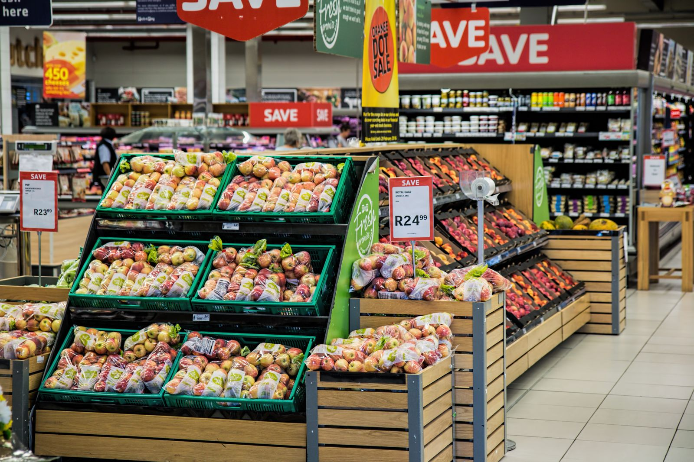
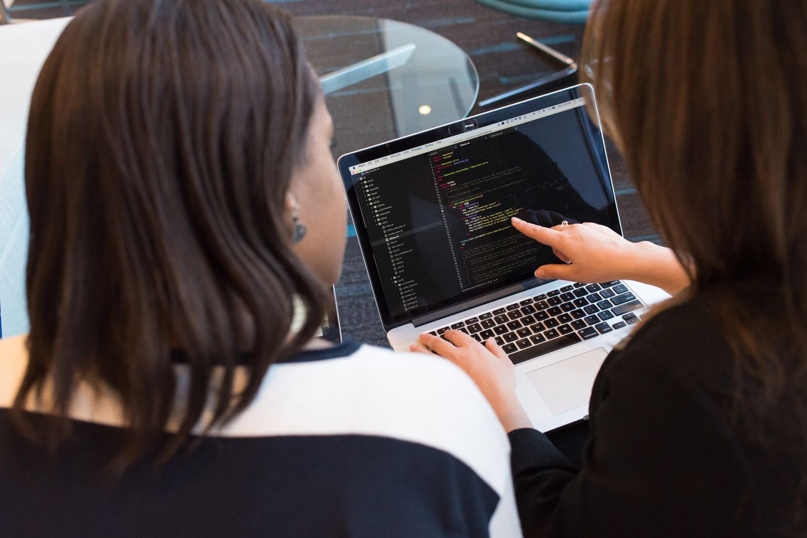

Home / Portfolio
Selected work
Systems that stayed in use.
A sample of products. Names of private clients are changed. The jobs are not.
Healthcare
Northwind wards
A ward board and billing handoff for a clinic group.
Charge status and the ward list stopped living in two systems.
- Discharge status visible to billing
- Fewer missed charges in the first quarter

Retail
Harbour Goods
Stock and store orders for a regional retailer.
The shop and the warehouse finally share one number.
- Store orders without retyping
- Stock the floor can trust
Field service
Fieldnote
A field-service app that works between signal.
Technicians close a job when the van is still on site.
- Offline close-out
- The office can see the van

Education
Batchroom
Fees, tests, and attendance for a coaching network.
The evening follow-up no longer depends on a chat group.
- Fees and attendance in one place
- A list of students who are slipping
Logistics
Dockline
Dispatch and proof of delivery for a carrier.
The dock sees the proof before the driver is back in the yard.
- Routes for the day
- Proof attached to the stop
Professional services
Ledger & Co
A client portal with approvals and invoices.
Clients approve work without a chain of forwarded mail.
- Approvals in the portal
- Invoices that match the work
Start a brief
Tell us the job the software should take on.
A call or a note is enough. If the shape is unclear, we will suggest a short discovery instead of a guess.